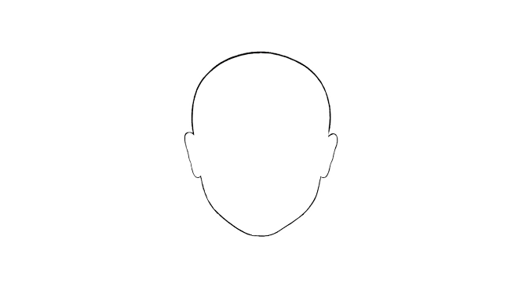

<div style="text-align: center">
  <div>
    <div *ngIf="this.needTitle">
      <h1
        style="margin: -10% auto 5% auto; font-family: Cambria, Cochin, Georgia, Times, 'Times New Roman', serif; font-weight: 600;">
        Reconhecimento Facial</h1>
    </div>
    <div style="position: relative; ">
      <webcam [height]="this.Measusres.height" [width]="this.Measusres.width" [trigger]="triggerObservable"
        (imageCapture)="handleImage($event)" *ngIf="showWebcam" [allowCameraSwitch]="allowCameraSwitch"
        [switchCamera]="nextWebcamObservable" [videoOptions]="videoOptions" (cameraSwitched)="cameraWasSwitched($event)"
        (initError)="handleInitError($event)" [mirrorImage]="mirrorImage">
      </webcam>
      <div style="position: absolute; top: 50%; left: 50%;transform: translate(-50%, -50%); ">
        
      </div>
    </div>

    <p *ngIf="isActivated" style="font-weight: 500; margin-top: 3%;">Centralize seu rosto no local indicado acima.</p>
  </div>
</div>